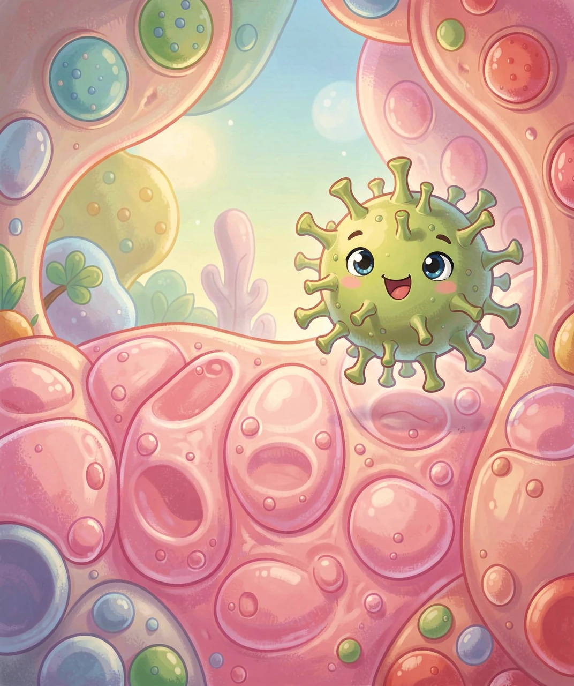
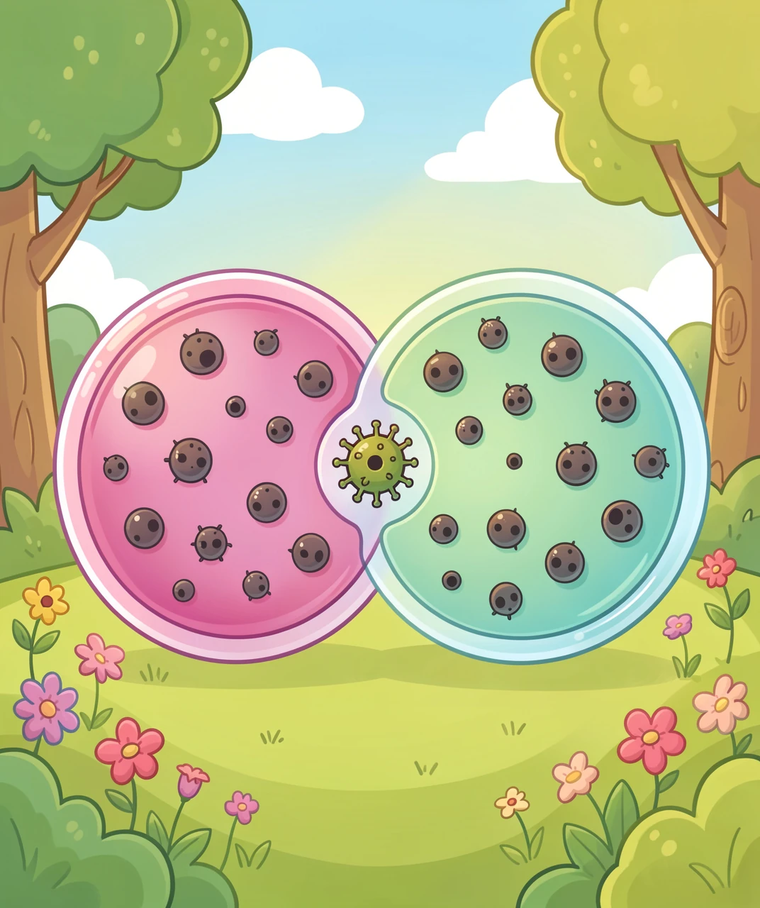
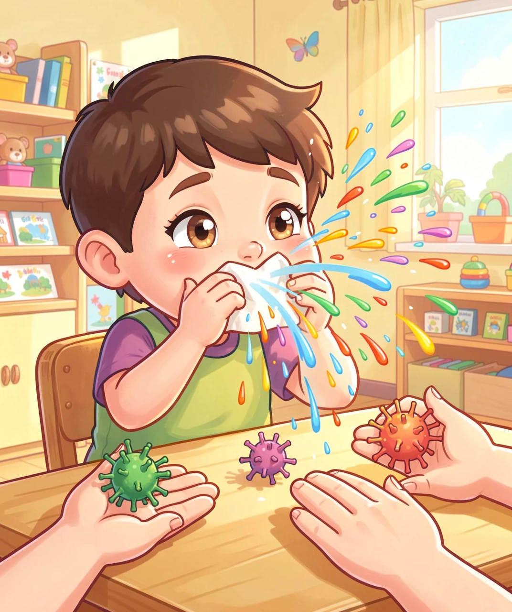
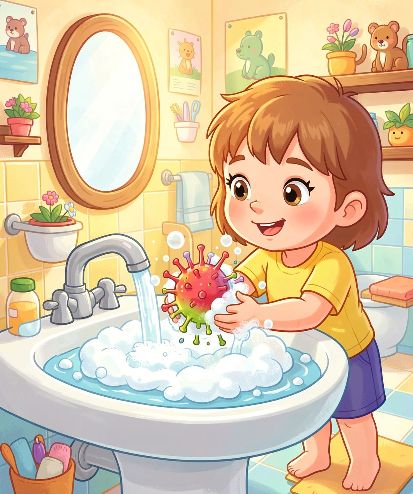

为什么小宝宝最容易中招？一个会「把细胞粘成一团」的病毒
有一种病毒，几乎每个小朋友在两岁之前都会遇到它。它叫呼吸道合胞病毒，英文简称 RSV。对大人来说，它可能只是一场普通感冒；可对小宝宝来说，它却可能让人喘不上气，甚至要住院。
先琢磨一下它名字里最奇怪的那个词——「合胞」。「合」是合并，「胞」是细胞。合起来就是：把好几个细胞合在一起。为什么一个病毒要叫这个名字？这就是我们要追的第一个问题。

要弄明白「合胞」，我们先回到最根本的问题：病毒到底是个什么东西？病毒甚至不能算"活着"——它没有细胞，没有嘴巴，也没有自己的工厂。它只是一段写着"复制我"的说明书，外面套了一层壳。所以它想繁殖，必须 钻进别人的细胞，抢走人家的工厂来用。
那它怎么钻进去？这个病毒的表面有一根根小小的「尖刺」，叫 F 蛋白。你可以把它想成一把「钩子加焊枪」：先用钩子钩住细胞膜，再把病毒的外壳和细胞膜"焊"在一起，说明书就漏进细胞里了。
诡异的事情在后面：被感染的细胞，表面也会插满这种 F 蛋白。于是，它转头就把旁边健康的邻居细胞也焊了过来。几个细胞焊成一个大团团，里面挤着好几个细胞核——这就是「合胞体」。
为什么病毒要费这么大劲把细胞焊成一团？因为这样它能直接从细胞"递"给细胞，根本不用跑到细胞外面去。而我们身体里巡逻的抗体，主要是在细胞外面抓病毒的——病毒躲在细胞里面传递，抗体就拿它没办法。这是它躲避免疫系统的高招。

很多人以为："宝宝容易被病毒欺负，是因为免疫力弱。"这只说对了一半。真正的第一性原理答案，其实藏在「管道的粗细」里。
我们的气管就像一根根通气的管子。病毒进来后，身体会发炎、会分泌痰液，管壁会肿一点。同样多的痰和肿胀，放在大人的粗气管里，只是稍微窄了一点点，几乎没感觉；可放在小宝宝那根像吸管一样细的气管里，就能把通道堵掉一大半！管子越细，堵住的比例越大——这就是宝宝会喘、会呼吸困难的根本原因。
还有第二个原因：没见过世面。宝宝的免疫系统是"新手"，从没见过这个病毒，既反应慢，又容易反应过头——发炎太厉害反而制造更多黏液，把管子堵得更死。妈妈通过胎盘传给宝宝的抗体，在出生几个月后会慢慢变少，保护力也就跟着降下来了。
所以宝宝病得重，不只是"弱"，更是「管子细 + 免疫新手」这两件事叠在一起的结果。
我们常说"得过了就有免疫力"，可这个病毒偏偏能反复感染同一个人。为什么？
第一，抗体会褪色：打完一仗，身体里的抗体数量会慢慢下降，过一阵子就不够用了。第二，免疫有点打偏：前面说过那个 F 蛋白，它在"焊"之前和"焊"之后形状是不一样的，身体的免疫反应很多时候打的是"焊完以后"的形状，防护力就打了折扣。第三，病毒会小变装：它的表面蛋白会变一点点，让记忆有点对不上。
再加上它传染性极强：一个喷嚏打出无数飞沫，病毒还能在桌面上、玩具上、手上活好几个小时——你摸完再揉眼睛、摸嘴巴，它就进来了。所以它传得飞快，几乎每个孩子两岁前都中过招。
好消息是：第二次、第三次感染通常轻得多，因为免疫系统毕竟记住了一部分，"新手"已经变成"老兵"了。

防护也要追到底层原理，不能只记"要洗手"。
① 为什么洗手最管用？因为这种病毒外面包着一层「油膜」（脂质包膜）。肥皂的本事，就是把油溶掉。油膜一散，病毒就散架了，再也焊不了细胞。所以它看着普通，却是最便宜、最有效的武器——用肥皂认真搓 20 秒以上。
② 切断传播：流行季少去人多拥挤的地方；家里多通风；大人生病时别亲宝宝；勤擦玩具和门把手。
③ 新武器——「借来的盾牌」：现在有给孕妈妈打的疫苗（妈妈的抗体通过胎盘传给宝宝），也有直接给宝宝的单克隆抗体（比如尼塞韦单抗）。它不是疫苗，而是直接送一批现成的抗体，专门咬住病毒的 F 蛋白，让它焊不了细胞。为什么不给宝宝直接打疫苗就好？因为宝宝的免疫系统太嫩，自己造抗体又慢又弱；直接给抗体，等于"马上就有盾牌用"，能管好几个月。
④ 什么时候必须去医院？如果出现：呼吸很快很费力、吸气时肋骨之间陷下去、嘴唇发青、精神很差、不肯吃喝尿很少——别等，马上去医院。
